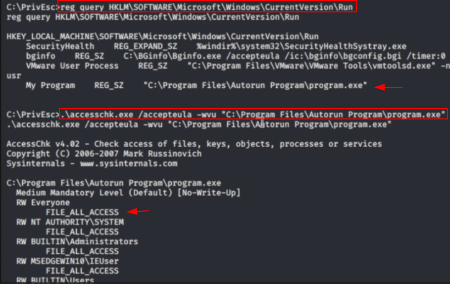

not applicable for OSCP
Requirements:
1. able to write to an AutoRun executable
2. able to restart the system.
Identification
.\winPEASany.exe quiet applicationinfo
search: Autorun Applications
check: FilePerms: Everyone [AllAccess]
or check the manually
reg query HKLM\SOFTWARE\Microsoft\Windows\CurrentVersion\Run
check permission
.\accesschk.exe /accepteula -wvu "C:\Program Files\Autorun Program\program.exe"

backup the program.exe then copy to the path
restart the system